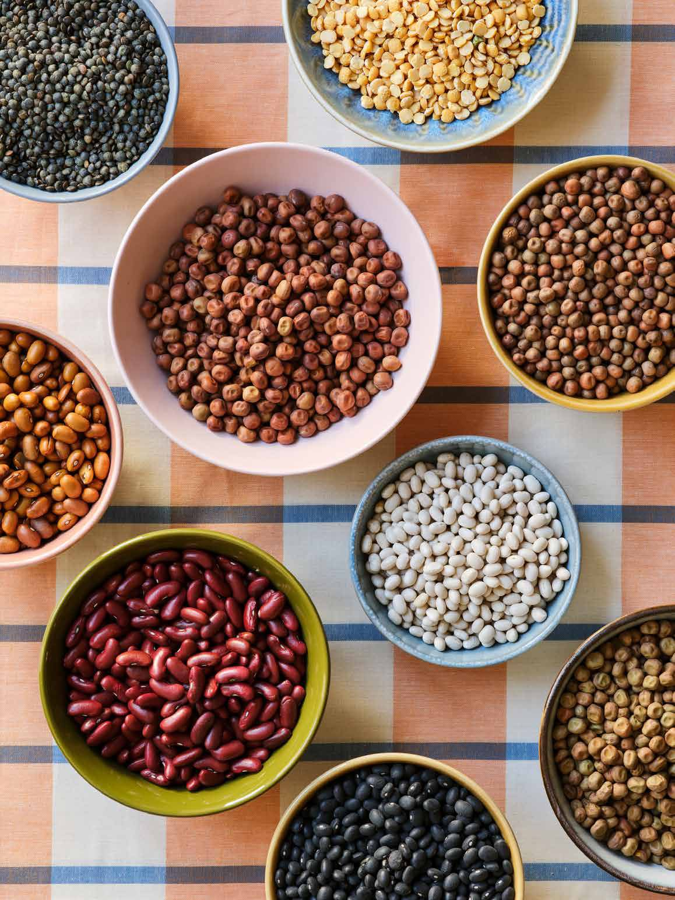
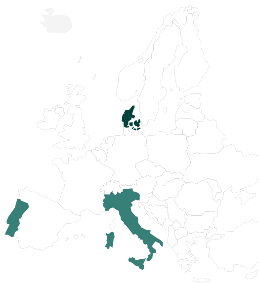
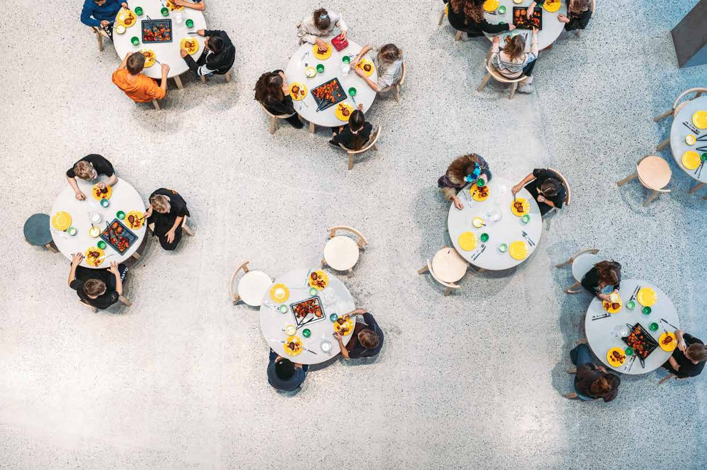

Title of the latest blogpost
Short abstract of the project to write here. Keep the text concise but also that people know what it’s about.
Read moreTransforming EU Food systems through
Sustainable Public Food Procurement
AI PROFOOD is an EU-funded project working to transform food systems through sustainable public procurement. By developing an AI and blockchain-powered platform, the project aims to embed sustainability criteria into every stage of the procurement process. The approach fosters transparency, accountability, and efficiency, creating a model where every ingredient, recipe, and meal reflects a shared commitment to health, sustainability, and innovation.
The objectives
The AI-powered platform
AI PROFOOD is developing a modular digital platform that integrates AI and blockchain to support the full procurement cycle from tender design and supplier evaluation to contract management and predictive analytics. Multi-criteria evaluation tools embed sustainability directly into the process, helping procurement officers identify suppliers and products that meet environmental, social, and nutritional standards.
The platform is currently under development and will be accessible directly from this website once ready.
Involved cities
The project follows a clear, phased approach to scaling. Copenhagen is the model city, providing the procurement data that powers the platform. Two associate cities in Portugal and Italy join in year two. By year three, ten replication cities across Europe will bring the model to scale.
- Model city · Copenhagen, Denmark
- Associate cities · Portugal and Italy, year two


Get in touch
with us!
Whether you are interested in becoming a replication city or simply want to know more about AI PROFOOD, we would love to hear from you. Write us an email at chiara.falvo@unito.it
Follow us on LinkedIn